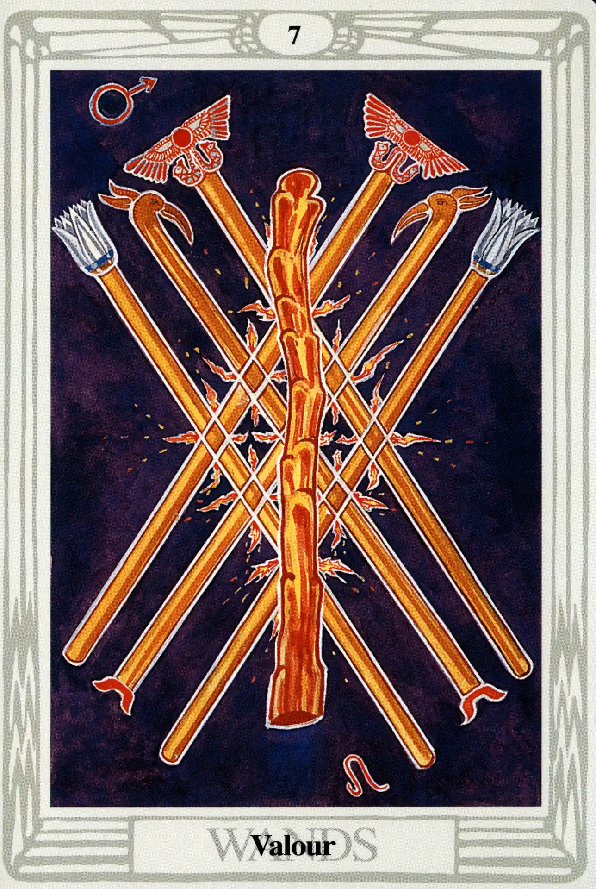

Wands
Seven of Wands
Valour

(Mars in Leo)
20° to 30° Aries
August 12 to August 22
Original Title: Lord of Valour.
Golden Dawn Model: Two gripped hands holding six wands, three are crossed. A third hand appears from a cloud at the lower part of the card, holding an upright wand, which passes between the others. Flames flash where wands meet.
King Scale for Netzach: Amber.
The Four Scales for Mars: Red; Venetian Red; Bright Red, rayed Azure or Emerald.
The Four Scales for Leo: Yellow (greenish); Deep Purple; Grey; Reddish Amber.
Formula: 7 (Netzach) of Wands (Atziluth) + Mars in Leo = VALOUR
The background of the Seven of Wands is deep purple, but, other than that, this card is a near carbon copy of the Six of Wands. A crude seventh wand, more like a club, overshadows the other six and delivers a sobering message: “The four Sevens are not capable of bringing any comfort; each one represents the degeneration of the element. Its utmost weakness is exposed in every case.”
There is still enough power and energy in the Seven of Wands to slug it out. But the situation has degenerated into such a mess that nobody is sure with whom to slug it out! It may be that a blow here or there will find its mark, but, more times than not, it's a waste of energy. Crowleys sums it up aphoristically, “Patriotism, so to speak, is not enough.”
Warlike Mars may find a measure of moral support in proud and fiery Leo, but machismo is a tragic joke this far down the Tree of Life in the weak and unbalanced environment of Netzach (natural home of sensitive, peace-loving Venus). The high art of battle has been replaced with the chaos of a mindless melee. “The army,” Crowley observes, “has been thrown into disorder; if victory is to be won, it will be by dint of individual valour—a ‘soldiers' battle.”